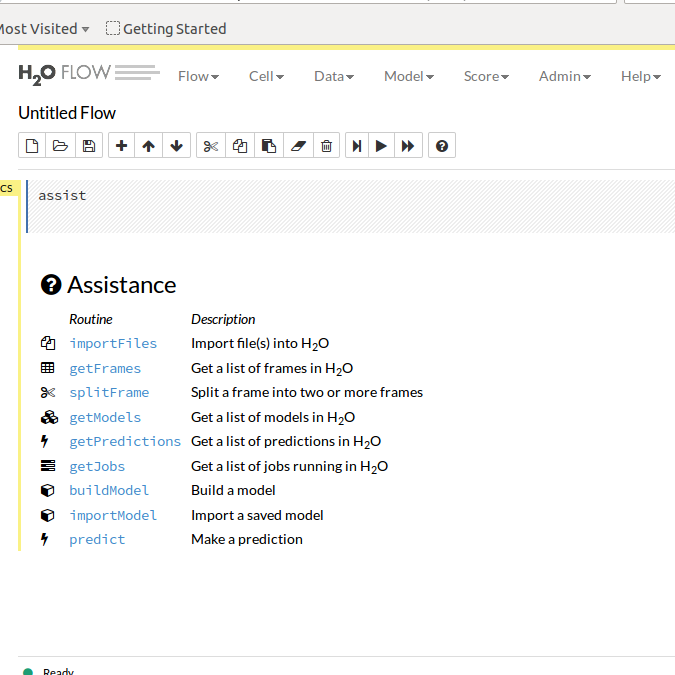

A case study with h2o
Have a large scale data science project and don't have enough memory (RAM)? h2o and cloud computing platform can help you to be ready within a couple of minutes. In this post, I'll show you my first hands-on experience using h2o and amazon web service together.
I assume that you already have an amazon web service account. If not, I encourage you to contact your bank and request for a Visa or MasterCard or whatever providers that allow online payment.
h2o is one of my favorite ML tool for big data
project. It's completely open source, no further installation is needed once you choose an AMI with java already configured like the Amazon Linux AMI (as you can see in the picture below)
After selecting your AMI, you are asked to choose an instance type. To avoid billing, I chose a t2.micro instance which is a free tier eligible instance with 1gb of ram you can experiment until you are ready to scale your project.
When ready, you can upgrade your instance type to ingest your data flow. For example, m4.4xlarge is an instance type with 64gb of RAM and 16 cores CPU. The magic with instance is that you can create as many as you need and h2o will handle this for you during your model training so your computation will be distributed across nodes (instances) and CPU. This is the distributed computing power of h2o.
At this stage, you may review and launch your instance. Next step is to configure your security rules so that It allows inbound and outbound traffic. Default security group will not allow you to launch h2o from the browser.
Here are snapshots of both inbound and outbound traffic I chose:
Now that your ec2 instance is fully configured, you can download h2o into it.
First, ssh into your instance from your local terminal. Before, be sure your are in the directory of your .pem file you generated during the instance creation wizard then
run the following commands:
$ sudo chmod 400 NameOfYourKeyPair.pem
$ ssh -i "NameOfYourKeyPair.pem" ec2-user@your-private-dns
We can get all the details with the amazon dashboard (click on the Actions button then Connect):
At this stage, if everything worked fine, you should be connected to your cloud instance on aws. In the terminal of your instance (which is different from your terminal), run the following commands:
$ sudo yum update
Download the file using the wget.
Before, you may look at the latest stable version and change the url above:
$ wget http://h2o-release.s3.amazonaws.com/h2o/rel-slater/9/h2o-3.2.0.9.zip
Here you can see the power of cloud computing especially in countries with lower internet connection. The amazon connection is superfast!
unzip the file
$ unzip h2o-3.2.0.9.zip
Go to h2o folder:
$ cd h2o-3.2.0.9
then, launch h2o:
$ java -jar h2o.jar
Now, h2o is live on the cloud and you can access the flow UI using the url
your-public-DNS:54321You should then see an user interface like this:
Now the power of cloud computing is open to you! Next time we will dive into details of running distributed algorithms on this instance with h2o (to be continued...)